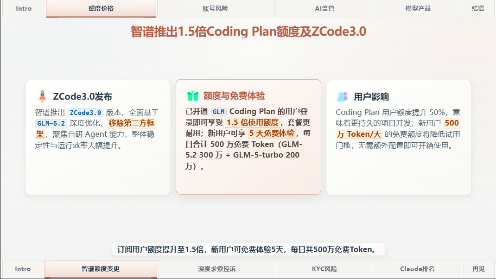
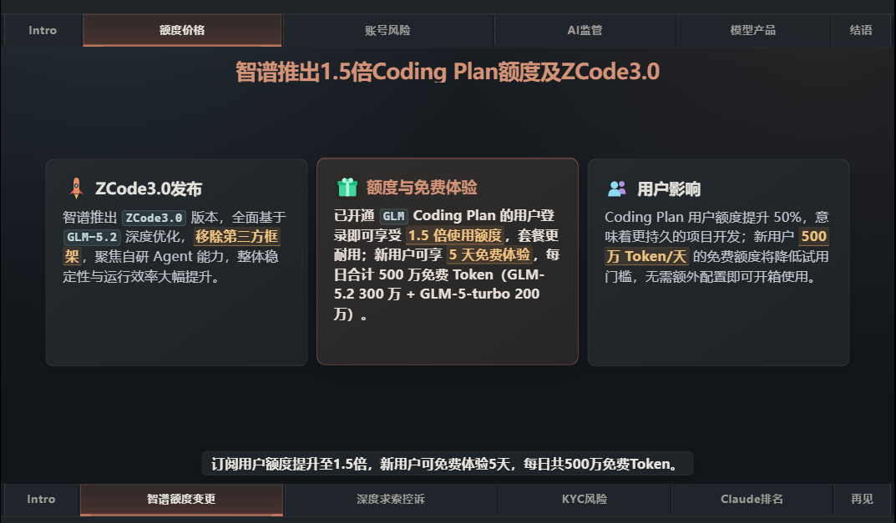

推荐
一键自动出片
配好 .env 后，一条命令完成抓取、配音、生成图标。适合日常自动出日报。
bun run video:prepare
跑完用下面两条预览或导出 mp4：
bun run dev
bun run video:render
AI 日报 · 自动视频生成
从 RSS 抓取、AI 筛选、TTS 配音，到一键渲染成片。不用懂代码也能跑起来。
两条命令，就能在本地预览一段带旁白的示例视频。跑通了再决定要不要深入。
bun install
bun run preview

亮色
暗色
▶ 查看完整视频演示 ·
想要无旁白的静音版可换 preview:notts
配好 .env 后，一条命令完成抓取、配音、生成图标。适合日常自动出日报。
bun run video:prepare
跑完用下面两条预览或导出 mp4：
bun run dev
bun run video:render
不想配 Key、不想抓内容？用上面「先看效果」的两条命令即可，preview 不依赖 .env。
自己控制标题、配图和字幕：复制一份示例，改 data.json，再预览。
cp -r demo/data-scheme-sample-1 data-scheme
bun run dev
编辑 data-scheme/data.json，图片放进 data-scheme/images/。
bun --version 和 go version 都要能跑。
REQUIRE_VOICE_QUALITY_FFMPEG=false 跳过。
MINIMAX_API_KEY，内容总结用 AI_API_KEY。暂时没有就先关掉：TTS_REQUIRE=false、CLAUDE_VISION_ENABLED=false。
⚠ 需要抓 linux.do 时，在根目录 .env 配小写
all_proxy（科学上网环境）。
遇到问题，最直接的方式是用项目自带的 skill：
/ai-daily-report 你的问题